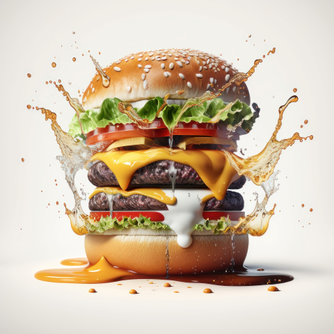
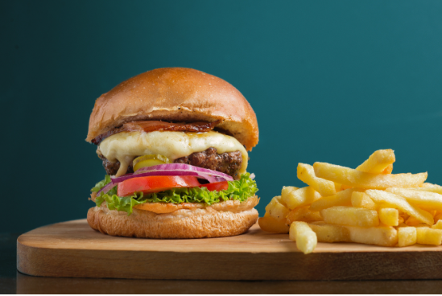
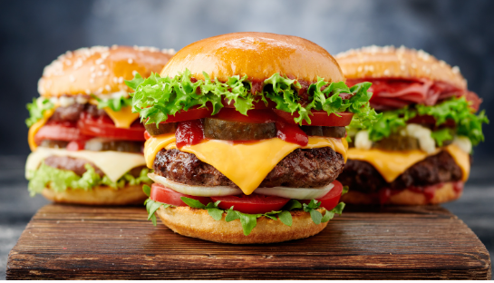

Burger Recipe
Description
A grilled beef patty on a bun is called a burger. Lunch at a fast food restaurant often consists of a burger and fries.
You can use the word burger as a casual shorthand for hamburger, which is ground or minced beef that's fried and served on a bun.



Ingredients
- Ground beef (80% lean and 20% fat is a good ratio for juiciness)
- Hamburger buns
- Lettuce leaves
- Sliced tomatoes
- Sliced onions
- Pickles (optional)
- Ketchup, mustard, mayonnaise (optional)
- Salt and pepper for seasoning
- Olive oil or vegetable oil for cooking
Steps
- Preparing the Patties:
- In a bowl, take the ground beef and season it with salt and pepper according to your taste. Gently mix the seasoning into the meat.
- Divide the beef into equal portions, typically around 1/4 to 1/3 pound (113g)
- Make a slight indentation in the center of each patty with your thumb. This helps the patty cook more evenly.
- Cooking the Patties:
- Preheat a grill or a skillet over medium-high heat. You can also use a stovetop grill pan or griddle.
- If using a skillet, add a small amount of oil to prevent sticking.
- Cook the patties for about 4-5 minutes on each side, or until they reach your desired level of doneness
- If adding cheese, place a slice on top of each patty during the last minute of cooking, allowing it to melt.
- Assembling the Burger:
- Slice the hamburger buns in half and lightly toast them if desired.
- Spread condiments such as ketchup, mustard, and mayonnaise on the bottom half of the bun.
- Place the cooked patty on top of the condiments.
- Add lettuce leaves, sliced tomatoes, onions, and pickles on top of the patty.
- Place the top half of the bun on the assembled ingredients.
- Serving the Burger:
- You can wrap the burger in wax paper or parchment paper for easier handling.
- Serve the burger with your favorite side dishes like french fries, coleslaw, or a salad.
- Enjoy your homemade burger!